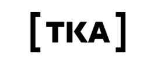
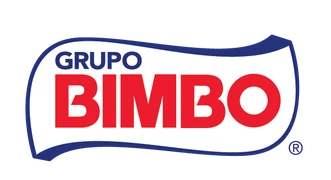
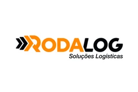
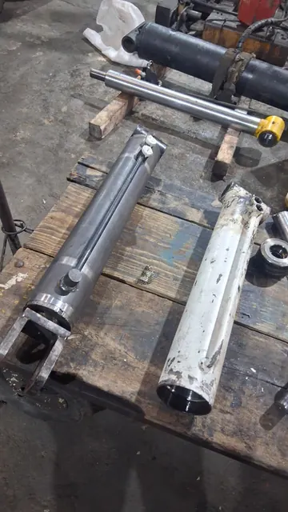
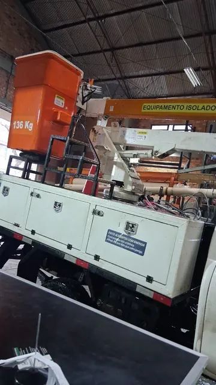
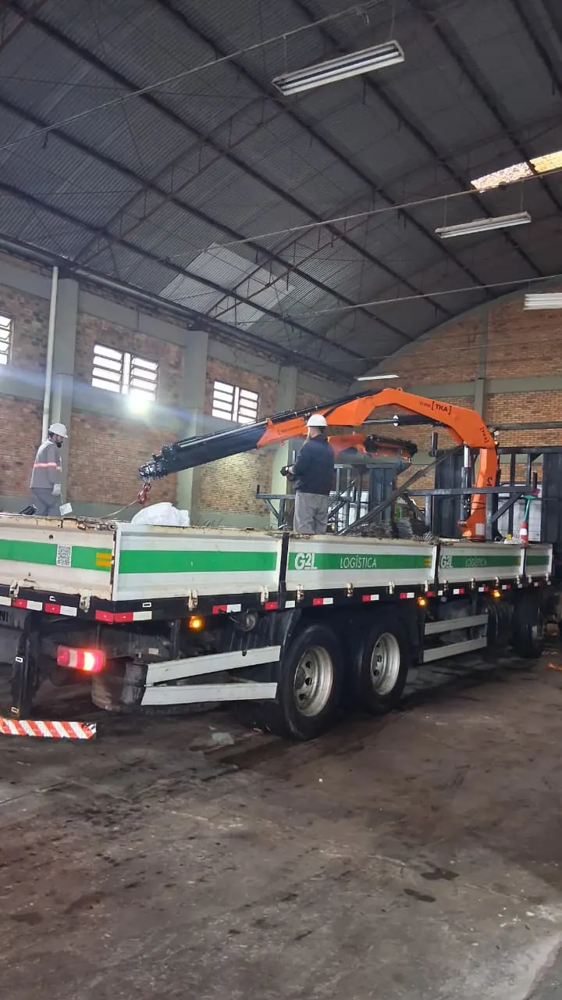
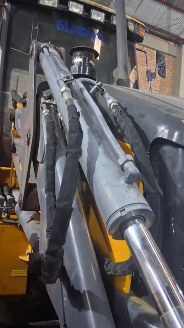
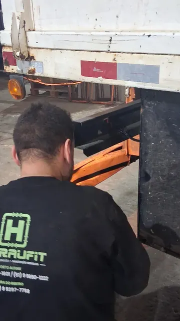
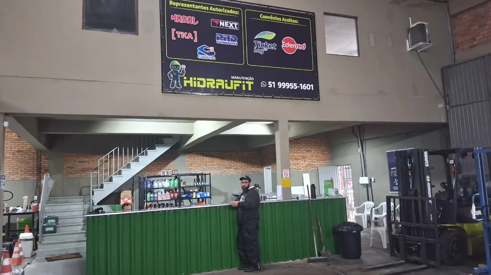

Gestor de frota
Um fornecedor de confiança para a frota toda, não só na emergência. Com registro do que foi feito em cada equipamento.
Oficina especialista · Porto Alegre
Manutenção de bombas, cilindros e comandos hidráulicos para Munck, Linha Viva, máquina pesada e agrícola. Primeiro o diagnóstico, depois o orçamento.
Para quem é
Um fornecedor de confiança para a frota toda, não só na emergência. Com registro do que foi feito em cada equipamento.
Máquina parada é gente parada de trabalhar. A gente encontra a causa da pane e resolve com técnica, não com remendo.
Tratores e implementos agrícolas com manutenção hidráulica e mangueiras feitas por quem entende de máquina pesada.
Serviços
Manutenção e instalação de equipamentos hidráulicos com equipe técnica especializada. Da bomba ao cilindro, do comando à solda, tudo na mesma oficina.
Manutenção e reparo de bombas hidráulicas industriais e de equipamentos como Munck, Linha Viva e plataforma.
Conserto, reforma e fabricação de cilindros hidráulicos de todos os tipos.
Instalação e manutenção de sistemas de comando hidráulico.
Documentação emitida com profissional habilitado. O equipamento sai da oficina com o registro do que foi encontrado, do que foi feito e do que revisar daqui para frente.
Usinagem de precisão para peças hidráulicas, com tornearia própria. A peça não depende de terceiro.
Soldas especializadas para equipamentos hidráulicos, feitas com técnica para não trincar de novo em poucos meses.
Recuperação de áreas danificadas, preparo de superfície, acabamento e pintura.
Instalação, venda e manutenção de kits de rádio controle. Mais precisão, segurança e produtividade na operação.
Aluguel de empilhadeiras com a manutenção incluída.
Suporte técnico completo com profissionais qualificados. Quando o equipamento não pode vir até a oficina, a equipe vai até ele.
A HidrauFit Mangueiras e Conexões atende em Porto Alegre e em Barra do Ribeiro.
Conhecer a lojaComo trabalhamos
É assim em todo serviço. Sem trocar peça no achismo e sem empurrar o que o seu equipamento não precisa.
Quando o equipamento chega, a gente confere tudo: o que tem, o que falta e como está. Só depois vem o diagnóstico.
A gente descobre se o problema está na bomba, na válvula, no cilindro ou no comando.
Você entende o motivo da quebra antes de aprovar qualquer serviço.
Só o que o equipamento precisa. Sem troca de peça desnecessária.
Serviço feito na estrutura própria: usinagem, solda, tornearia e comandos.
Laudo técnico, plano de manutenção e ART com profissional habilitado, quando o serviço pede. E todo o histórico fica no nosso sistema.
Cada serviço fica registrado no nosso sistema. Na próxima vez que a máquina entrar, a gente já sabe tudo o que aconteceu com ela.
Não sabe onde está o problema? Mande fotos ou um vídeo do equipamento pelo WhatsApp e conte o que está acontecendo.
Mandar fotosRespaldo técnico
Quando o serviço pede, o equipamento sai da oficina com a documentação emitida por profissional habilitado. É segurança para quem gere a frota e para quem opera a máquina.
Fabricantes de guindastes e implementos que fazem parte do dia a dia da oficina.

Clientes


A oficina
Tornearia interna, usinagem, solda especial e comandos hidráulicos no mesmo lugar. Fotos reais da oficina, na Rua Doutor João Inácio, em Porto Alegre.





É para isso que existe o diagnóstico. A gente avalia o sistema, encontra a origem da falha e explica o motivo da quebra antes de qualquer orçamento.
Depende do que o diagnóstico encontrar. Por isso a gente não passa preço nem prazo no escuro: primeiro avalia, depois orça.
Sim. Quando o equipamento não pode vir até a oficina, a equipe vai até ele. Chame no WhatsApp, conte onde a máquina está e a gente combina o atendimento.
Sim. Laudo técnico, plano de manutenção e ART são emitidos com profissional habilitado, conforme o serviço.
Para muita coisa, resolve. Sistema hidráulico de Munck, Linha Viva e plataforma pede especialista: diagnóstico certo, peça certa e solda feita com técnica. É o que diminui a chance de a mesma quebra voltar.
Munck e guindastes, Linha Viva, plataformas, retroescavadeiras, empilhadeiras, caminhões de lixo, máquinas agrícolas e bombas hidráulicas industriais, entre outros. Se o seu não estiver na lista, pergunte.
Sim. Além do laudo, todo o histórico fica no nosso sistema: o que foi feito, o que ficou pendente, as peças trocadas e a garantia.
Sim: instalação, venda e manutenção de kits de rádio controle, para a operação ficar mais precisa e segura.
Sim, com a manutenção incluída. Fale com a gente para saber a disponibilidade.
Contato
Conte o que está acontecendo com o equipamento. Se puder, mande fotos ou um vídeo.
Rua Doutor João Inácio, 199 · Navegantes
Porto Alegre/RS · CEP 90230-180
Segunda a sexta, das 8h às 18h
